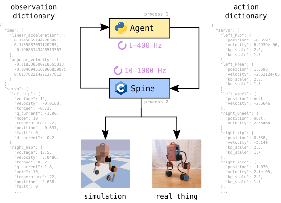

Table of Contents
Custom hardware
Upkie's motion control software can apply to other wheeled-biped robots with different hardware, as long as they use the same mjbots actuators and electronics. When making a custom robot, the step by step instructions from the Wiki should work, replacing of course Step 2 on 3D printing with your own parts. The Raspberry Pi setup and electronics testing will be the unchanged. This section details the requirements to be able to pass the motion control software step. See also #517.
URDF requirements
Upkie's software makes the following assumptions about the wheeled-biped robot description.
1. Joint names
Your description has six revolute joints named: left_hip, left_knee,left_wheel, right_hip, right_knee, right_wheel.
You can add more joints, but if they are not "fixed" joints you will also need to customize the software to send proper joint actions to them. (By default, the Bullet interface will send zero-torque commands to unknown mobile joints.) The recommended path of customization is to set all new joints to type="fixed" first and check that balancing works in simulation. Once this works, free the joints and customize their actions.
2. IMU link
There is a virtual link named imu whose frame matches the frame of your robot's IMU.
3. Sagittal vector
The sagittal vector of your robot, defined as the vector pointing from the back to the front of its trunk, corresponds to the x-axis of its base-link frame.
See also #527.
Development workflow
While newcomers will likely run start_simulation.sh and import the upkie package in Python, as you get acquainted with the robot and develop your own agents (in your fork of the repository or using the new_agent template), you may want to contribute some features back upstream. Here is a short guide on compiling from source to do that.
C++ development
The C++ development workflow consists of Makefile rules. First, setup a build environment following the instructions for your system:
To upload software to the robot, you will also need to define the UPKIE_NAME environment variable. Assuming the hostname of your Upkie is "michel-strogoff", for example, you can add the following to your shell configuration file:
An IP address will also work.
To make sure your build environment works, try to rebuild the pi3hat spine from source:
You can then upload it by make upload and check that it runs on the Raspberry Pi of your Upkie:
Once the spine is running, you can run any agent in a separate shell on the robot, for example the PID balancer from the examples directory:
Python development
The Python development workflow is based on Pixi. You can list the available tasks with a dry:
For instance:
- Build and open the documentation:
pixi run open-docs - Check linting:
pixi run lint - Check unit tests:
pixi run -e test-py12 test - Open a shell in a fully configured environment:
pixi shell
Inter-process communication
Upkie implements an action-observation loop to control robot actuators from a standalone "agent" process. The inter-process communication (IPC) protocol between the agent and the "spine" process that talks to actuators looks like this:

The agent can be a simple Python script with few dependencies. This separation between agent and spine provides a robot/simulation switch to train or test agents in a simulation spine before running them on a real robot.
This protocol is suitable for real-time but not high-frequency (> 1000 Hz) performance, which is fine for balancing and locomotion on Upkies. (If you are wondering whether Python is suitable for real-time applications, we were too, until we tried it out.) All design decisions have their pros and cons. Some pros for this design are:
- Run the same Python code on simulated and real robots
- Interfaces with to the mjbots pi3hat and mjbots actuators
- Interfaces with to the Bullet simulator
- Observer pipeline to extend observations
- Soft real-time: spine-agent loop interactions are predictable and repeatable
- Unit tested, and not only with end-to-end tests
Meanwhile, cons against this design include:
- Low frequency: designed for tasks that run in the 1–400 Hz range (like balancing)
- Soft rather than hard real-time guarantee: the code is empirically reliable by a large margin, that's it
- Weakly-typed IPC: typing is used within agents and spines, but the interface between them is only checked at runtime
Spine state machine
Spines run a state machine depicted in the following diagram:

States have the following purposes:
- Stop: do nothing, send stop commands to servos.
- Reset: apply runtime configuration to the spine's actuation interface and observers.
- The reset state is not time-critical, i.e., configuration can take time.
- When exiting the reset state, the spine writes observations back to the agent.
- Idle: do nothing.
- Act: send action to the actuation interface and write observation back to the agent.
- Shutdown: terminal state, exit the control loop.
There are three possible events:
BEGIN: beginning of a control cycle.END: end of a control cycle.SIGINT: the process received an interrupt signal.
Guards (in blue), i.e. conditions required to trigger a transition, may involve two variables:
req: the current Request from the agent.stop_cycles: the number of stop commands cycled in the current state (only available in "stop" and "shutdown" states).
Read/write operations from/to the shared memory are indicated in red.
[Advanced] Design notes
Single spine binary
We want a single spine binary per interface: Bullet, pi3hat, etc. That binary may offer several observer and controller pipelines, configured via the command line.
- Pros:
- Combinatorial complexity in distributing, installing and running different spines.
- Allows
Upkie-Spine-*Gymnasium environment names - Simpler for users, especially newcomers.
- Cons:
- Combinatorial complexity makes the code branching.
Source code headers
All C++ source files should start with the license line:
All Python source files should start with the following four lines:
Optionally, license lines can be followed by copyright lines corresponding to the various contributions to the file (those are optional as in most legal systems copyright is automatically conferred upon the creation of an original work, without the need for a notice), and author lines to identify the individuals who contributed them.